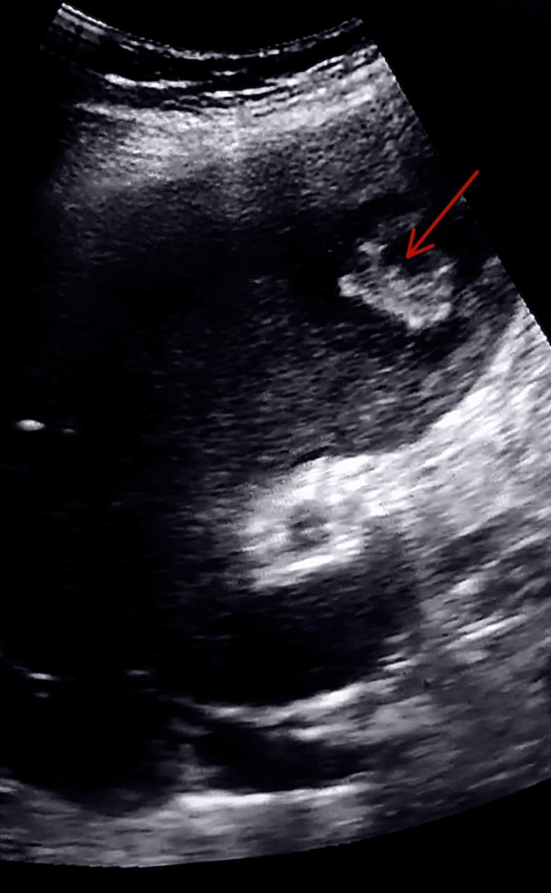
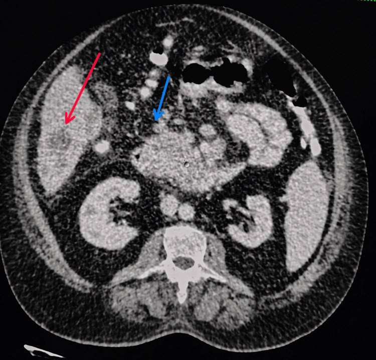
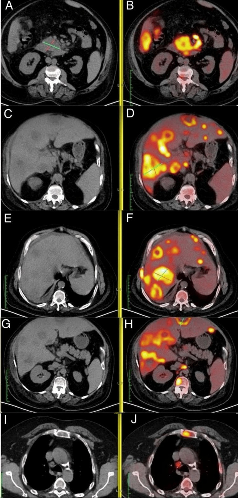
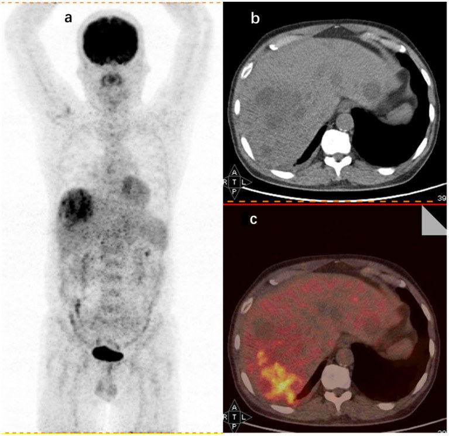
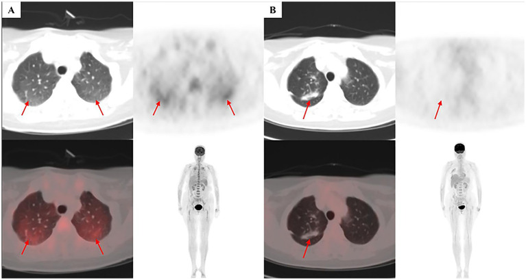

147 — Sốt kéo dài không rõ nguyên nhân (FUO) & ổ nhiễm ẩn trong bụng: tiếp cận hình ảnh theo bậc / Fever of unknown origin and occult abdominal infection: a stepwise imaging approach
Tags: pattern:o-nhiem-an vung:bung protocol:FDG-PET-CT protocol:CT-bung-da-thi
Mức chắc chắn (certainty): tổng hợp y văn (literature synthesis) — tự biên từ y văn mở (Clin Infect Dis 2026 PMC13341253; J Clin Med 2026 PMC13258763; Front Med 2024 PMC11847851; Biomed Rep 2024 PMC11428087; J Clin Med 2026 PMC13206891; Mol Cell Pediatr 2026 PMC13319292), số liệu lấy nguyên từ bài gốc.
Câu hỏi gốc của bài: bệnh nhân sốt ≥ 38,3 °C nhiều đợt, kéo dài > 3 tuần, đã làm xét nghiệm cơ bản mà không tìm ra ổ — hình ảnh nên đi theo bậc nào (siêu âm → CT → MRI → FDG-PET/CT), khi nào được phép bỏ cuộc, và khi nào phải sinh thiết? Cụ thể trong bụng: áp-xe gan thật hay di căn ung thư tụy giả áp-xe? Lao phúc mạc, bệnh Crohn, áp-xe cơ thắt lưng chậu hay u lympho? Điểm tựa giải phẫu – sinh lý: sốt là đáp ứng trung tâm (PGE2 ở vùng dưới đồi) nên không chỉ điểm vị trí; ổ nhiễm ẩn thường nằm ở khoang kín, ít triệu chứng (sau phúc mạc, dưới hoành, cơ thắt lưng chậu, tiểu khung) hoặc trong tạng đặc (gan, lách, thận) — nơi không có niêm mạc để "tự dẫn lưu". Vì vậy nguyên tắc là: tìm ổ bằng hình ảnh toàn thân, nhưng đọc theo giải phẫu khoang, không đọc "một phim bụng".
1. Tổng quan bệnh học – cơ chế hình ảnh
A. FUO — định nghĩa và dịch tễ (con số dùng trong thực hành)
- Định nghĩa cổ điển (Petersdorf–Beeson 1961): sốt > 38,3 °C nhiều lần, bệnh > 3 tuần, chưa chẩn đoán được sau 1 tuần nằm viện.
- Định nghĩa đồng thuận Delphi 2024 (dùng hiện nay): sốt > 3 tuần, ≥ 38,3 °C trên > 3 lần, chưa rõ nguyên nhân sau khi hoàn thành bộ xét nghiệm tối thiểu, ở người lớn miễn dịch bình thường (PMC13341253). Điểm mới: tiêu chí "định tính" (bắt buộc đã làm đủ bộ xét nghiệm tối thiểu) thay vì chỉ đếm ngày.
- Vì sao tiêu chí định tính quan trọng: phân tích gộp 2024 cho thấy nhóm dùng tiêu chí định tính có tỉ lệ ca không chẩn đoán được tăng tương đối 15,3% (KTC 2,3–28,3; p = 0,021) so với nhóm chỉ dựa thời gian — tức là định nghĩa đổi cả "mẫu bệnh" (PMC13341253).
- Tần suất: 2,0–2,9% bệnh nhân nằm viện trong 2 nghiên cứu hồi cứu (Nhật, Ý; 9.830 ca) (PMC13341253).
- Phân bố nguyên nhân (788 ca, 21 quốc gia, 2023): nhiễm khuẩn 51,6%; trong nhiễm khuẩn: lao (Mtb) 34,3%, brucella 9,7%, viêm nội tâm mạc 7,5%, áp-xe 7,3%, CMV/EBV 7,2%, viêm phổi 6,5%, nhiễm khuẩn tiết niệu 6,5%, thương hàn 4,8% (PMC13341253).
- Bệnh viêm không nhiễm trùng (NIIID): viêm khớp tự phát người lớn (AOSD) 58,5%, lupus 26,7%, viêm đa cơ thấp 5,6%; trong viêm mạch, viêm động mạch tế bào khổng lồ 68,9%; trong u hạt, sarcoidosis 61,9% (PMC13341253).
- Ung thư: huyết học 57,9%; u lympho 70,1%, bạch cầu 25,2%, myeloma 3,4%, MDS 1,3% (PMC13341253).
- Nhóm khác: sốt do thuốc 18,4%, bệnh tuyến giáp 16,5%, tăng thân nhiệt thói quen 10,7%, huyết khối tĩnh mạch 2,9% (PMC13341253).
- TẠI SAO sốt mà không có ổ rõ: cytokine (IL-1, IL-6, TNF) → PGE2 ở vùng dưới đồi → tăng điểm đặt nhiệt độ → sốt, bất kể ổ ở đâu. Vì vậy kiểu sốt (liên tục/dao động) có giá trị định vị rất kém; chỉ thăm khám + hình ảnh + xét nghiệm mới định vị được (PMC13258763).
B. Vì sao FDG-PET/CT "nhìn thấy" ổ nhiễm ẩn — và vì sao nó không đặc hiệu
- Cơ chế: tế bào viêm (bạch cầu trung tính, đại thực bào) và tế bào u tăng biểu hiện GLUT-1/GLUT-3 và tăng hexokinase → bắt giữ ¹⁸F-FDG (một chất tương tự glucose nhưng bị giữ lại trong tế bào vì không chuyển hóa tiếp). Vì vậy nhiễm khuẩn, viêm vô khuẩn và ung thư đều "nóng" — FDG không phân biệt bản chất, chỉ định vị nơi có chuyển hóa cao.
- Hệ quả thực hành: giá trị lớn nhất của PET/CT là phát hiện ổ mà CT thường bỏ sót và hướng dẫn sinh thiết đúng chỗ, không phải "chẩn đoán bệnh".
- Số liệu "thật" về hiệu quả: nhóm 284 bệnh nhân FUO, PET/CT chỉ đúng vào chẩn đoán cuối ở 47,9%, Se 79,5% – Sp 61,1% – PPV 75,6% – NPV 66,3%, nhưng thay đổi điều trị ở 44,0% (PMC11847851). Nhóm 105 bệnh nhân khác: dương thật 49%, dương giả 23%, âm thật 9,5%, âm giả 19%, Se 72% – Sp 29% – độ chính xác 58% (PMC11428087).
- Vì sao các bài tổng quan nói "84–98%"? Con số cao đó là "diagnostic yield" theo nghĩa can thiệp/góp phần chẩn đoán, không phải "tỉ lệ dương thật". Cùng một phương thức, hai cách đếm cho hai con số rất khác — phải đọc định nghĩa trước khi trích (PMC13341253 vs PMC11847851). Đây là điểm phản biện bắt buộc khi tư vấn.
- Giá trị tiên lượng của PET âm: PET/CT âm tính liên quan tự khỏi sốt cao gấp ~5,6 lần (RR 5,6; KTC 3,4–9,2; p < 0,001) so với PET dương — một thông tin hữu ích để trấn an và ngừng xét nghiệm (PMC13341253).
C. Vì sao "ổ nhiễm ẩn" hay nằm trong bụng
- Giải phẫu: ổ bụng có nhiều khoang kín (dưới hoành, dưới gan, cạnh lách, hố chậu, sau phúc mạc) và tạng đặc (gan, lách, thận) — ổ mủ ở đây không có đường thoát tự nhiên, chỉ biểu hiện bằng sốt.
- Đường lây theo mạch: ổ nhiễm ở vùng dẫn lưu tĩnh mạch cửa (ruột thừa, túi thừa, ruột non) → pylephlebitis → áp-xe gan nhỏ rải rác (bài 163). Đây là lý do khi thấy áp-xe gan "không rõ nguồn" phải đi tìm ổ ở ruột.
- Cơ quan "im lặng": áp-xe cơ thắt lưng chậu (psoas) chỉ đau khi đi lại/duỗi háng; áp-xe dưới hoành chỉ đau vai; nhiễm trùng túi phình/endograft ĐMC chỉ sốt + đau lưng.
- Số liệu trong bụng: trong phân tích Thổ Nhĩ Kỳ, áp-xe trong ổ bụng là nguyên nhân nhiễm khuẩn phổ biến thứ hai của FUO và áp-xe gan là dạng ổ khu trú hay gặp nhất; các nhóm khác: bệnh ruột viêm, bệnh gan–mật–tụy, lao phúc mạc, u tiêu hóa (PMC13258763).
- Số liệu hình ảnh theo bậc (73 ca, tiến cứu đa trung tâm): X-quang ngực 60%, CT ngực 82%, siêu âm bụng 86%, CT bụng 92% độ nhạy chẩn đoán; MRI toàn thân cho yield 71% và thay đổi xử trí ~50% (PMC13341253).
2. Mẫu hình + chẩn đoán phân biệt theo vị trí (gamut)
Theo khoang giải phẫu — "đọc bụng theo 8 ngăn":
- Gan – đường mật: áp-xe gan sinh mủ (kể cả Klebsiella), áp-xe amip, microabscess nấm (candida, nhiều ổ 2–5 mm), viêm đường mật, lao gan, nang sán bội nhiễm, hoại tử u (HCC/di căn — giả áp-xe), pylephlebitis.
- Lách: nhồi máu lách (thường gây sốt nhẹ), áp-xe lách, lao lách, lymphoma — xem bài 146.
- Tụy: viêm tụy cấp/mạn, nang giả bội nhiễm, ung thư tụy hoại tử (giả áp-xe).
- Hồi manh tràng: viêm ruột thừa (kể cả thể mạn), bệnh Crohn, lao hồi manh tràng, Yersinia/actynomycosis, lymphoma, carcinoid.
- Đại tràng: viêm túi thừa + áp-xe, ung thư đại tràng, viêm đại tràng giả mạc.
- Sau phúc mạc: áp-xe cơ thắt lưng chậu, áp-xe quanh thận, nhiễm trùng túi phình/endograft ĐMC, lao thượng thận, di căn.
- Tiểu khung: áp-xe phần phụ (TOA), viêm vùng chậu, áp-xe sau mổ/lưới, dị vật.
- Ổ bụng tự do: lao phúc mạc, carcinomatosis, áp-xe sau thủng tạng rỗng.
Theo cơ chế (khi chưa định vị được) — mnemonic VITAMIN: Vascular (huyết khối, viêm mạch, giả phình), Infection (lao, áp-xe, nội tâm mạc, brucella), Trauma/foreign body (dị vật, lưới, endograft), Autoimmune (AOSD, lupus, GCA, sarcoidosis), Malignancy (lymphoma, IVLBCL, leukemia, ung thư đặc), Intoxication/drugs (sốt do thuốc), Neurogenic/khác (tăng thân nhiệt thói quen, cường giáp).
Mẫu hình hình ảnh cần nhận diện:
- Ổ dịch có khí + thành ngấm → áp-xe (khí không bắt buộc).
- Nhiều ổ nhỏ ngoại vi gan (2–5 mm) ở bệnh nhân giảm bạch cầu/đặt catheter → microabscess nấm.
- Nốt/tổn thương ngấm viền + dấu "đích" → di căn hoặc áp-xe; bờ ngoài nhẵn + phù quanh + sốt nghiêng áp-xe.
- Dày phúc mạc lan tỏa + cổ trướng + hạch → lao phúc mạc/carcinomatosis (bài 141).
- Dày thành hồi manh tràng + hạch + nốt vệ tinh → lao/Crohn/lymphoma.
- Tăng chuyển hóa lan tỏa không ổ trên PET → lymphoma/IVLBCL, bệnh hệ thống, hoặc dương giả.
3. Bảng so sánh phân biệt (ma trận đối chiếu)
| Thực thể (entity) | Hình ảnh điển hình (US/CT/MRI/PET) | Chốt vào (rule-in) | Chốt loại (rule-out) | Gợi ý xác nhận |
|---|---|---|---|---|
| Áp-xe gan sinh mủ | Ổ dịch giảm đậm độ, thành ngấm, có thể khí, phù gan quanh; thường một ổ > 3 cm | Sốt + đau hạ sườn phải + ổ dịch thành ngấm + phù quanh | Bờ ngoài nhẵn, không phù, ngấm kiểu "đích" → nghĩ di căn | Cấy máu, chọc hút; chọc hút/dẫn lưu khi ổ lớn (ngưỡng thường dùng ≥ 5 cm) hoặc không đáp ứng kháng sinh |
| Áp-xe amip | Ổ lớn thùy phải, bờ nhẵn, không khí, không thành dày | Bối cảnh dịch tễ + huyết thanh amip + đáp ứng metronidazole | Thành dày nham nhở + khí + bạch cầu tăng → vi khuẩn | Huyết thanh/PCR amip |
| Microabscess nấm | Nhiều ổ nhỏ 2–5 mm rải rác gan–lách–thận, ngấm viền | Sốt dai dẳng + giảm bạch cầu hạt + catheter + cấy nấm | Một ổ lớn đơn độc → áp-xe vi khuẩn | Cấy máu, (1,3)-β-D-glucan, sinh thiết |
| Di căn/ung thư hoại tử (giả áp-xe) | Nhiều tổn thương ngấm viền không đều, dấu đích, có khối nguyên phát tụy/đại tràng | Khối nguyên phát + hạch + nhiều tổn thương + LDH/CA 19-9 | Bờ đều, phù quanh, đáp ứng kháng sinh → áp-xe | Sinh thiết tổn thương dễ tiếp cận nhất; PET/CT |
| Lao phúc mạc | Dày phúc mạc + cổ trướng + hạch hoại tử, dày mạc treo; CT/MRI | Cổ trướng dịch tiết + ADA cao + hạch hoại tử | Cổ trướng trong, không dày phúc mạc → xơ gan/tim | Sinh thiết phúc mạc nội soi; PCR lao |
| Lao hồi manh tràng | Dày thành hồi manh tràng + hạch + nốt vệ tinh, có thể hẹp | Vị trí + hạch hoại tử + IGRA dương | Tổn thương chỉ ở đại tràng trái → nghĩ Crohn/viêm túi thừa | Nội soi + sinh thiết, PCR |
| Bệnh Crohn | Dày thành từng đoạn, dấu "bàn chải", áp-xe/đường rò, hạch viêm | Tổn thương bỏ nhảy + đường rò + đáp ứng corticoid/sinh học | Dày liên tục + hạch hoại tử → lao/lymphoma | MRI ruột non, nội soi, sinh thiết |
| Viêm ruột thừa thể mạn/áp-xe | Ruột thừa > 6 mm, thâm nhiễm mỡ, appendicolith, áp-xe hố chậu | > 6 mm + thâm nhiễm mỡ + đau hố chậu phải | Không thấy ruột thừa bệnh lý + hạch lan tỏa → lymphoma | CT/US; xem bài 161/163 |
| Áp-xe cơ thắt lưng chậu | Cơ psoas to, ổ dịch trong cơ, mất mặt phẳng mỡ; đau khi duỗi háng | Sốt + đau lưng/háng + ổ dịch trong cơ psoas | Cơ to đối xứng, không dịch → chấn thương/thuốc | CT/MRI; dẫn lưu |
| Nhiễm trùng túi phình/endograft | Khí/tụ dịch quanh túi phình, thành dày ngấm, giả phình; PET dương quanh mảnh ghép | Sốt + đau lưng + khí/tụ dịch quanh mảnh ghép | Mảnh ghép ổn định, không khí, không dịch → theo dõi | CT 3 thì, PET/CT, cấy máu |
| Lymphoma/IVLBCL | Hạch lớn, ngấm đồng nhất, lách to, tổn thương ngoài hạch; PET lan tỏa, SUV cao | Hạch > 1,5–2 cm + nhiều ổ + LDH/ferritin rất cao | Hạch nhỏ, phản ứng, không có tổn thương ngoài hạch | Sinh thiết hạch/da/tủy; PET hướng dẫn |
| AOSD (bệnh Still) | Không có ổ đặc hiệu; hạch nhỏ, lách to, tràn dịch; PET có thể dương nhẹ lan tỏa | Sốt cao dao động + ban + đau khớp + ferritin rất cao | Có ổ đặc hiệu/khối → không phải AOSD | Loại trừ nhiễm/u; ferritin, IL-18 |
| Sốt do thuốc | Không có tổn thương trên CT/PET ngoài phản ứng nhẹ | Bắt đầu thuốc 1–3 tuần trước + eosinophil + hết sốt sau ngừng 48–72 giờ | Có ổ nhiễm/khối → không phải | Ngừng thuốc nghi ngờ, theo dõi |

Siêu âm là bước đầu tiên: nhiều tổn thương tăng âm hai thùy gan + gan to, gợi ý "áp-xe". Chẩn đoán cuối của ca này không phải áp-xe — xem quiz ca 1. Nguồn: Pakal YK, Cureus 2026 (PMC13136653) Fig. 1, CC BY 4.0.4. Protocol chụp + thuật toán chẩn đoán theo bậc
Bộ xét nghiệm tối thiểu trước khi được gọi là FUO (Delphi 2024) — theo PMC13341253:
- Huyết học – sinh hóa: công thức máu, điện giải/thận, canxi, men gan, ESR, CRP, ferritin, TSH.
- Miễn dịch: RF, ANCA, ANA.
- Nhiễm: HIV 1/2, tổng phân tích nước tiểu, IGRA/tuberculin, 3 bộ cấy máu; huyết thanh viêm gan khi men gan bất thường.
- Hình ảnh tối thiểu: siêu âm bụng + X-quang ngực thẳng/nghiêng (hoặc CT ngực–bụng–chậu nếu có chỉ định).
Bậc hình ảnh (bằng chứng về độ nhạy):
| Bậc | Phương thức | Độ nhạy / yield | Ghi chú thực hành |
|---|---|---|---|
| 1 | Siêu âm bụng | 86% (73 ca) | Rẻ, không xạ; yếu ở sau phúc mạc, ruột, tủy xương |
| 2 | CT bụng–chậu có cản quang | 92% | 3 thì nếu nghi gan/tụy/mạch; lát ≤ 2,5 mm |
| 2 | CT ngực | 82% (X-quang chỉ 60%) | Bỏ sót lao/hạch/nấm nếu chỉ chụp X-quang |
| 3 | MRI (bụng, ruột non, toàn thân, DWI) | MRI toàn thân yield 71%, đổi xử trí ~50% | Tốt cho tủy xương, cơ, thần kinh, thai phụ/trẻ |
| 4 | ¹⁸F-FDG PET/CT | Dương thật 47,9% (Se 79,5/Sp 61,1); nhóm khác Se 72/Sp 29 | Chỉ sau khi đã đủ tiêu chí FUO (đồng thuận mạnh của Delphi) — không thay thế CT/US |
Chuẩn bị PET/CT: nhịn ăn ≥ 6 giờ, kiểm tra đường huyết trước tiêm theo quy trình EANM của đơn vị; tránh vận động mạnh/tiêm tĩnh mạch cùng bên tổn thương nghi ngờ; ghi lại thuốc kháng sinh/corticoid đã dùng (làm giảm yield); đọc MIP + hợp nhất + CT và so sánh với CT trước — không đọc SUV đơn thuần.
Sinh thiết — "chốt hạ" khi hình ảnh không đủ:
- Hạch: sinh thiết cho chẩn đoán 36,4% (88/242) ca FUO có hạch; yếu tố dự báo dương: nam (OR 2,47), không có ban (OR 3,53), chỉ số hình dạng hạch (OR 8,57), giảm albumin (OR 3,37) (PMC13206891).
- Tủy xương: cho chẩn đoán 23,8% (31/130), chủ yếu bệnh máu ác tính (80,6%) (PMC13341253).
- Sinh thiết gan: cho chẩn đoán 8,8% (3/34) (PMC13341253).
- Nguyên tắc: sinh thiết tổn thương dễ tiếp cận nhất và an toàn nhất, ưu tiên tổn thương mới xuất hiện/tiến triển; tránh sinh thiết nhồi máu lách mạn giả u (bài 146) và tránh sinh thiết mù khi chưa loại trừ rối loạn đông.
flowchart TD
A[Sốt > 3 tuần, >= 38,3 độ C, chưa rõ nguyên nhân] --> B[Xác minh sốt, rà soát thuốc,<br/>khám toàn thân + bộ xét nghiệm tối thiểu]
B --> C{Có dấu hiệu định vị<br/>hoặc xét nghiệm bất thường?}
C -->|Có| D[Siêu âm/CT đúng vùng<br/>+ cấy/sinh thiết]
C -->|Không| E[Siêu âm bụng + X-quang/CT ngực]
E --> F{Có ổ?}
F -->|Có| G[Điều trị theo ổ + sinh thiết nếu cần]
F -->|Không| H[CT bụng-chậu 3 thì + MRI nếu cần]
H --> I{Có ổ?}
I -->|Có| G
I -->|Không| J[FDG-PET/CT sau khi đủ tiêu chí FUO]
J --> K{Có ổ tăng chuyển hóa?}
K -->|Có| L[Sinh thiết đúng ổ PET hướng dẫn<br/>hoặc điều trị thử theo bệnh cảnh]
K -->|Không| M[Theo dõi, tìm sốt do thuốc/AOSD<br/>PET âm: tiên lượng tự khỏi cao]
Ngưỡng "dừng" và theo dõi: nếu PET/CT âm và không có dấu hiệu báo động, theo dõi lâm sàng là hợp lý — PET âm liên quan tự khỏi cao gấp ~5,6 lần; nhưng không được bỏ theo dõi vì tỉ lệ âm giả 19% (lao, brucella, thương hàn, lymphoma, AOSD) (PMC11428087, PMC13341253).
5. Biến thể bình thường và cạm bẫy
- PET "nóng" không phải chẩn đoán: sinh lý bình thường ở não, tim, gan, thận–bàng quang, ruột, tủy xương, tuyến lệ/tuyến nước bọt, mỡ nâu, cơ sau vận động/rét run; viêm sau mổ, sau sinh thiết cũng dương. Luôn đọc hình thái trên CT đi kèm, không dựa vào SUV.
- Âm giả 19%: lao, brucella, thương hàn, viêm nội tâm mạc, lymphoma, AOSD — PET âm không loại trừ. Đặc biệt lao và AOSD có thể chỉ dương rất nhẹ/lan tỏa.
- Thuốc làm giảm yield: 73,2% bệnh nhân trong nhóm 284 ca đã dùng kháng sinh theo kinh nghiệm trước PET, 12,0% dùng glucocorticoid — cấy và PET đều kém nhạy hơn (PMC11847851). Nếu an toàn, ngừng kháng sinh trước khi lấy mẫu.
- "Áp-xe" giả do ung thư: ca điển hình — nhiều tổn thương gan ngấm viền + khối tụy móc câu giảm đậm độ; chẩn đoán cuối là ung thư biểu mô tụy di căn, không phải áp-xe (PMC13136653). Chốt: tìm khối nguyên phát + hạch + CA 19-9, và PET/CT khi CT không phân biệt được.
- PDC gây nhiễu: trong một loạt 167 ca, 81% "dấu hiệu gợi ý chẩn đoán" (PDC) là sai hướng (so với 48% ở loạt khác) — đừng để một dấu hiệu nhỏ lái cả cuộc điều tra (PMC13341253).
- Cạm bẫy mặt cắt — cổ trướng hay tràn dịch màng phổi: trên CT ngang, dịch trước cơ hoành/crus là cổ trướng; dịch sau crus, đẩy crus ra sau, là tràn dịch màng phổi; dấu bare area (dịch không vào được vùng gan trần) xác nhận cổ trướng. Đây là bước bắt buộc khi đánh giá "lao phúc mạc vs tràn dịch màng phổi" (bài 141).
- Sốt giả (factitious)/tăng thân nhiệt thói quen: phải xác minh nhiệt độ bằng nhiệt kế chuẩn, ghi nhật ký sáng/chiều; không đưa bệnh nhân đi PET/CT khi chưa xác minh sốt (khuyến cáo Delphi).
- Bệnh nhân không ổn định: không đẩy thẳng lên PET/CT — ưu tiên siêu âm/CT để tìm ổ cần dẫn lưu cấp (áp-xe, thủng, túi phình nhiễm trùng).
- Trẻ em khác người lớn: định nghĩa nhi dùng sốt ≥ 38,5 °C ít nhất 5/10 ngày liên tiếp; trong 113 trẻ, 63,7% tìm được nguyên nhân, nhiễm khuẩn 23,1%, viêm khớp tự phát thể hệ thống/Still 27,4% — vì vậy ở trẻ, siêu âm + xét nghiệm viêm và theo dõi sát thường có giá trị hơn chạy theo PET sớm (PMC13319292).
6. Tự lượng giá — Blind Quiz ngay trên trang tĩnh
Ca 1 — Nam 58 tuổi, sốt 6 tuần, sụt cân, đau thượng vị nhẹ. Siêu âm gan có "nhiều ổ áp-xe".

- Câu hỏi: Vì sao "áp-xe" mà không có khí và không có phù quanh rõ? Dấu hiệu nào trên ảnh gợi ý chẩn đoán khác? Nên làm gì tiếp?
Bấm để hiện đáp án (findings + chẩn đoán)
- Dấu hiệu: nhiều tổn thương gan ngấm viền (mũi tên đỏ) + khối giảm đậm độ ở móc câu tụy (mũi tên xanh), không thấy khí trong ổ.
- Chẩn đoán: ung thư biểu mô tụy di căn gan — các tổn thương gan giả áp-xe. Chẩn đoán "áp-xe" trên siêu âm là bẫy kinh điển.
- Bước tiếp: PET/CT (xem ca 2) + CA 19-9, sinh thiết tổn thương dễ tiếp cận; không dẫn lưu mù.
- Nguồn ảnh: Pakal YK, Cureus 2026 (PMC13136653) Fig. 2, CC BY 4.0.
Ca 2 — Cùng bệnh nhân, PET/CT toàn thân.

- Câu hỏi: PET/CT thay đổi chẩn đoán như thế nào? Có bao nhiêu "ổ" và ổ nào là nguyên phát?
Bấm để hiện đáp án (findings + chẩn đoán)
- Dấu hiệu: ổ tăng chuyển hóa mạnh ở móc câu tụy (A, B), nhiều ổ gan tăng chuyển hóa (C–H), ổ xương (I, J).
- Chẩn đoán: ung thư tụy di căn gan + xương — PET/CT xác định khối nguyên phát và lan toàn thân, đổi hoàn toàn hướng điều trị (từ "dẫn lưu áp-xe" sang ung thư học).
- Bài học: khi "áp-xe" không đáp ứng kháng sinh/dẫn lưu và có khối tụy, PET/CT là bước đúng.
- Nguồn ảnh: Pakal YK, Cureus 2026 (PMC13136653) Fig. 3, CC BY 4.0.
Ca 3 — Nam 60 tuổi, sốt 4 tuần, CRP cao, CT bụng không thấy ổ rõ. PET/CT được chỉ định.

- Câu hỏi: Mô tả ổ tăng chuyển hóa? Chẩn đoán khả năng nhất? Vì sao vẫn phải cấy/chọc hút?
Bấm để hiện đáp án (findings + chẩn đoán)
- Dấu hiệu: đám tăng chuyển hóa dạng "cụm" ở gan phải trên MIP (a), tương ứng ổ giảm đậm độ có viền trên CT (b) và hợp nhất PET/CT (c).
- Chẩn đoán: áp-xe gan — PET/CT định vị ổ khi CT thường không rõ, và hướng dẫn chọc hút/dẫn lưu.
- Vì sao vẫn cần vi khuẩn học: PET không cho biết tác nhân; cấy/dẫn lưu quyết định kháng sinh và nguồn nhiễm (đường mật, pylephlebitis, ruột thừa).
- Nguồn ảnh: Yu X, Front Med 2024 (PMC11847851) Fig. 2, CC BY 4.0.
Ca 4 (nâng cao) — Nữ 62 tuổi, sốt 10 tháng, ferritin và LDH rất cao, nhiều lần sinh thiết âm.

- Câu hỏi: PET dương lan tỏa, không ổ gợi ý gì? Vì sao sinh thiết mù thất bại?
Bấm để hiện đáp án (findings + chẩn đoán)
- Dấu hiệu: tăng FDG lan tỏa hai phổi, đậm hơn ở thùy trên (SUVmax 3,0) (A); sau R-CHOP hết hoàn toàn (B).
- Chẩn đoán: u lympho tế bào B lớn trong lòng mạch (IVLBCL) — tế bào u nằm trong lòng mạch, nên sinh thiết mô thường âm; PET dương lan tỏa là manh mối.
- Bài học: PET dương lan tỏa không ổ + ferritin/LDH/IL-10 rất cao → nghĩ bệnh máu ác tính, cần sinh thiết đúng vị trí PET dẫn (ở ca này là phổi sau soi lại PET).
- Nguồn ảnh: Chen Y, Front Med 2026 (PMC13152796) Fig. 3, CC BY 4.0.
Bài liên quan chéo
- 100 – Tổng quan hệ Bụng
- 163 – Pylephlebitis & huyết khối tĩnh mạch mạc treo (ổ nhiễm ruột → áp-xe gan)
- 161 – Viêm ruột thừa cấp: CT/siêu âm, ngưỡng 6 mm (nguồn nhiễm ẩn hay gặp)
- 146 – Huyết khối TM lách & nhồi máu lách (sốt + tổn thương lách)
- 141 – Phúc mạc: cổ trướng, carcinomatosis vs lao (lao phúc mạc)
- 124 – Bệnh mạch máu gan: Budd-Chiari, PVT (huyết khối là nguyên nhân FUO)
- 135 – Viêm tụy cấp Atlanta 2012 (nang giả bội nhiễm, ung thư tụy giả áp-xe)
Không dùng để chẩn đoán độc lập khi chưa có người hướng dẫn.